寻找「知识」
探索零知识证明系列（三）
And what, Socrates, is the food of the soul? Surely, I said, knowledge is the food of the soul. 苏格拉底，什么是灵魂的食物？我说过，当然是知识。 —— 柏拉图
导言：有些理论非常有趣，零知识证明便是其中之一，摸索了许久，想写点什么，与大家一起讨论。本文是『探索零知识证明』系列的第三篇。全文约 8,000 字，少量数学公式。
本文将在 Github 进行更新与修正。
「零知识」vs. 「可靠性」
我们在许多介绍零知识证明的文章中都能看到这样三个性质：
- Completeness —— 完备性
- Soundness —— 可靠性
- Zero-Knowledge —— 零知识
但是少有文章深入解释这个特性背后的深意和洞见。
在『系列（二）理解「模拟」』一文中，我们介绍了「模拟器」这个概念。许多介绍文章也避而不谈「模拟」，但「模拟」可以说是安全协议中核心的核心，因为它是定义「安全性」的重要武器。
通常，我们定义安全会采用这样一种方式，首先列出一些安全事件，然后说明：如果一个系统安全，那么列出来的安全事件都不会发生。
Rather than giving a list of the events that are not allowed to occur, it (the definition of zero-knowledge proof) gives a maximalist simulation condition.
— Boaz Barak
借用密码学家 Boaz Barak 的话，翻译一下，「零知识证明」并不是通过给出一个不允许发生的事件列表来定义，而是直接给出了一个最极致的「模拟条件」。
所谓「模拟条件」是指，通过「模拟」方法来实现一个「理想世界」，使之与「现实世界」不可区分；而由于在理想世界中不存在知识，所以可以推导出结论：现实世界满足「零知识」。
我们继续分析下一个交互系统（安全协议）的三个性质：「完备性」、「可靠性」与「零知识」。
可靠性（Soundness）：Alice 在没有知识的情况下不能通过 Bob 的验证。
完备性（Completeness）：Alice 在有知识的情况下可以通过 Bob 的验证。
零知识（Zero-knowledge）：Alice 在交互的过程中不会泄露关于知识的任何信息。
我们可以看出来「可靠性」和「完备性」有一种「对称性」。可靠性保证了恶意的 Alice 一定失败，而完备性保证了诚实的 Alice 一定成功。
「完备性」比较容易证明，只要 Alice 诚实，Bob 也诚实，那么皆大欢喜。这好比，写好一段代码，喂了一个测试用例，跑完通过收工。
我们来想想「可靠性」应该如何定义？这个可靠性的逆否命题是：（在现实世界中）如果 Alice 能通过 Bob 的验证，那么 Alice 一定有知识。或者说：Alice 知道那……个「秘密」！
下面的问题是如何证明 Alice 知道一个「秘密」？
这好像也很难，对不对？假如我们需要证明一台机器知道一个「秘密」，最简单的办法就是我们在机器的硬盘里，或者内存中找到这个「秘密」，但是这样暴露了秘密。如果这台机器是黑盒子呢？或者是 Alice 呢？我们没有读心术，猜不到她心里的那个秘密。
如何定义「To Know」？
「零知识」保证了 验证者 Bob 没有（计算）能力来把和「知识」有关的信息「抽取」出来。不能抽取的「知识」不代表不存在。「可靠性」保证了知识的「存在性」。
只有「知识」在存在的前提下，保证「零知识」才有意义
本文将探讨「可靠性」和「To Know」。
为了进一步分析「知识」，接下来首先介绍一个非常简洁，用途广泛的零知识证明系统 —— Schnorr 协议。这个协议代表了一大类的安全协议，所谓的 Σ-协议，而且 Schnorr 协议扩展也是 零知识数据交换协议 zkPoD [1] 的核心技术之一。
简洁的 Schnorr 协议
Alice 拥有一个秘密数字，a，我们可以把这个数字想象成「私钥」，然后把它「映射」到椭圆曲线群上的一个点 a*G，简写为 aG。这个点我们把它当做「公钥」。
-
sk = a -
PK = aG
请注意「映射」这个词，我们这里先简要介绍「同态」这个概念。椭圆曲线群有限域之间存在着一种同态映射关系。有限域，我们用 Zq这个符号表示，其中素数 q是指有限域的大小，它是指从 0, 1, 2, …, q-1 这样一个整数集合。而在一条椭圆曲线上，我们通过一个基点，G，可以产生一个「循环群」，标记为 0G, G, 2G, …, (q-1)G，正好是数量为 q个 曲线点的集合。任意两个曲线点正好可以进行一种「特殊的二元运算」，G + G = 2G，2G + 3G = 5G，看起来这个二元运算好像和「加法」类似，满足交换律和结合律。于是我们就用 +这个符号来表示。之所以把这个群称为循环群，因为把群的最后一个元素 (q-1)G，再加上一个 G就回卷到群的第一个元素 0G。
给任意一个有限域上的整数 r，我们就可以在循环群中找到一个对应的点 rG，或者用一个标量乘法来表示 r*G。但是反过来计算是很「困难」的，这是一个「密码学难题」—— 被称为离散对数难题[2]。
也就是说，如果任意给一个椭圆曲线循环群上的点 R，那么到底是有限域中的哪一个整数对应 R，这个计算是很难的，如果有限域足够大，比如说 256bit 这么大，我们姑且可以认为这个反向计算是不可能做到的。
Schnorr 协议充分利用了有限域和循环群之间单向映射，实现了最简单的零知识证明安全协议：Alice 向 Bob 证明她拥有 PK 对应的私钥 sk。
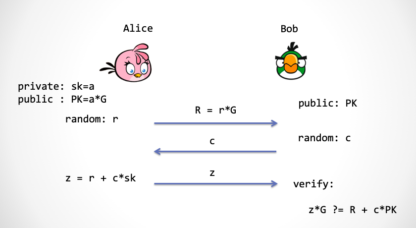
第一步：为了保证零知识，Alice 需要先产生一个随机数，r，这个随机数的用途是用来保护私钥无法被 Bob 抽取出来。这个随机数也需要映射到椭圆曲线群上，rG。
第二步：Bob 要提供一个随机数进行挑战，我们把它称为 c。
第三步：Alice 根据挑战数计算 z = r + a * c，同时把 z发给 Bob，Bob通过下面的式子进行检验：
z*G ?= R + c*PK = rG + c*(aG)
大家可以看到 Bob 在第三步「同态地」检验 z 的计算过程。如果这个式子成立，那么就能证明 Alice 确实有私钥 a。可是，这是为什么呢？
z 的计算和验证过程很有趣，有几个关键技巧：
- 首先 Bob 必须给出一个「随机」挑战数，然后 Bob 在椭圆曲线上同态地检查
z。如果我们把挑战数c看成是一个未知数，那么r+a*c=z可以看成是一个一元一次方程，其中r与a是方程系数。请注意在c未知的前提下，如果r + a*x = r' + a'*x要成立，那么根据 Schwatz-Zippel 定理[3]，极大概率上r=r'，a=a'都成立。也就是说， Alice 在c未知的前提下，想找到另一对不同的r',a'来计算z骗过 Bob 是几乎不可能的。这个随机挑战数c实现了r和a的限制。虽然 Bob 随机选了一个数，但是由于 Alice 事先不知道，所以 Alice 不得不使用私钥a来计算z。这里的关键：c必须是个随机数。 - Bob 验证是在椭圆曲线群上完成。Bob 不知道
r，但是他知道r映射到曲线上的点R；Bob 也不知道a，但是他知道a映射到曲线群上的点PK，即a*G。通过同态映射与Schwatz-Zippel 定理，Bob 可以校验z的计算过程是否正确，从而知道 Alice 确实是通过r和a计算得出的z，但是又不暴露r与a的值。 - 还有，在协议第一步中产生的随机数
r保证了a的保密性。因为任何一个秘密当和一个符合「一致性分布」的随机数相加之后的和仍然符合「一致性分布」。
证明零知识
我们这里看一下 Schnorr 协议如何证明一个弱一些的「零知识」性质——「SHVZK」：
注：这里我们证明的仅仅是 Special Honest Verifier Zero-Knowledge（SHVZK）。SHVZK 要求协议中的 Bob 的行为不能不按常理出牌，比如他必须按协议约定，在第二步时，去传送带上取一个新鲜的随机数，并且立即使用。而通常意义上的「零知识」是不会对 Bob 做任何要求，所以我们说这里是一个弱一些的性质。虽然目前 Schnorr 协议不能证明完全的「零知识」，但经过添加一些协议步骤，就可以达到完全零知识的目的，细节这里不展开，有兴趣的读者请参考文献[4]。以后我们在讨论 Fiat-Shamir 变换时，还会再次讨论这个问题。
首先「模拟器」模拟一个「理想世界」，在理想世界中模拟出一个 Zlice 和 Bob 对话，Zlice 没有 Schnorr 协议中的知识，sk，而 Bob 是有公钥 PK的。请大家看下图，Bob 需要在 Schnorr 协议中的第二步出示一个随机数 c，这里有个额外的要求， 就是 Bob 只能「诚实地」从一个外部「随机数传送带」上拿一个随机数，每一个随机数都必须是事先抛k次「硬币」产生的一个 2^k 范围内的一次性分布随机数。Bob 不能采用任何别的方式产生随机数，这就是为何我们要求 Bob 是诚实的。
下面演示 Zlice 如何骗过 Bob：
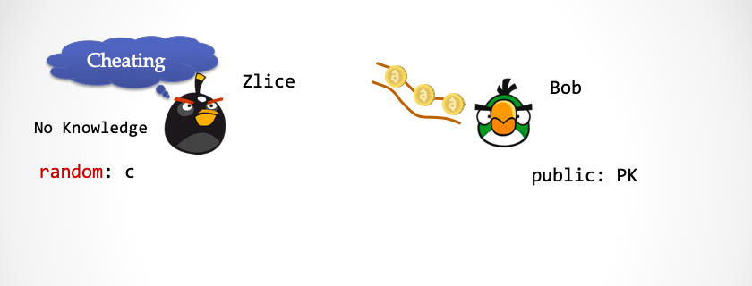
序幕：请注意 Zlice 没有关于sk的知识，这时 Bob 的随机数传送带上已经预先放置了一些随机数。
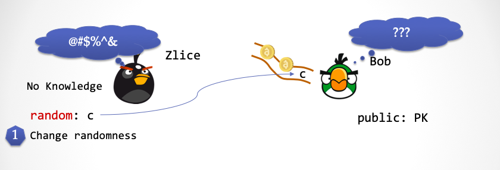
第一步：Zlice 产生一个一致性分布的随机数c，并且利用一个新的「超能力」，将刚刚产生的随机数 c 替换掉 Bob 的随机数传送带上第一个随机数。这时候，Bob 无法察觉。
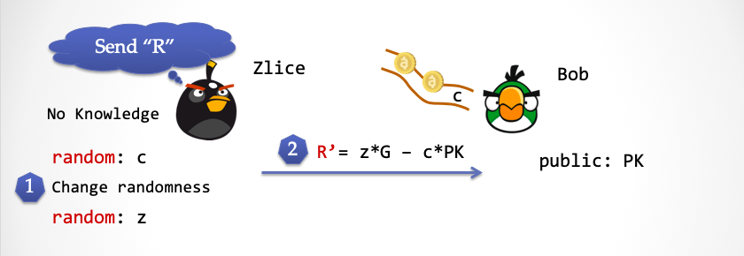
第二步：Zlice 再次产生一个随机数 z，然后计算 R'=z*G - c*PK，并将 R'发送给 Bob。
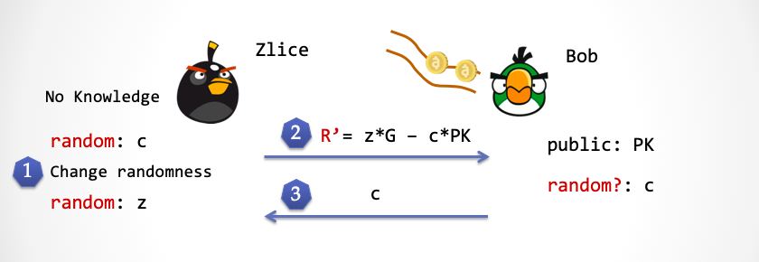
第三步：这时候Bob 会从随机数传送带上取得 c，并且将 c 发送给 Zlice。请注意这个c 正好就是第一步中 Zlice 产生的 c。
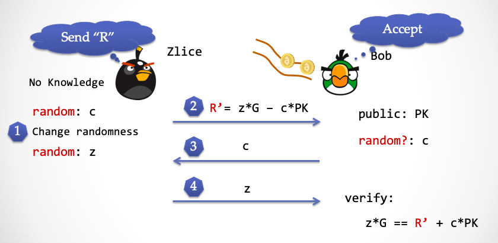
第四步：Zlice 将第三步产生的随机数 z 发送给 Bob，Bob 按照 Schnorr 协议的验证公式进行验证，大家可以检查下，这个公式完美成立。
大家可以再对比下「现实世界」的 Schnorr 协议，在两个世界中，Bob 都能通过验证。
但区别是：
- 在「理想世界中」，Zlice 没有
sk；而在「现实世界中」，Alice 有sk - 在「理想世界中」，
z是一个随机数，没有涉及sk；而在「现实世界中」，z的计算过程里面包含sk - 在「理想世界中」，Zlice 使用了超能力，替换了 Bob 的随机数；而在「现实世界中」，Alice 看不到 Bob 的随机数传送带，也无法更改传送带上的数字
这里请大家思考下：Schnorr 协议中，Bob 在第二步发挑战数能不能和第一步对调顺序？也就是说 Bob 能不能先发挑战数，然后 Alice 再发送 R = r*G。
（两分钟后……）
答案是不能。
如果 Alice 能提前知道随机数，那么 （现实世界中的）Alice 就可以按照模拟器 Zlice 做法来欺骗 Bob。
再遇模拟器
其实，「可靠性」和「零知识」这两个性质在另一个维度上也是存在着一种对称性。可靠性保证了恶意的 Alice 一定失败，零知识保证了恶意的 Bob （窃取知识）一定不会成功。有趣地是，这种对称性将体现在模拟出来的「理想世界」中。
我们分析下可靠性这个定义：Alice 没有知识 导致 Bob 验证失败。它的逆否命题为：Bob 验证成功 导致 Alice 一定有知识。
我们再次求助模拟器，让他在可以发挥超能力的「理想世界」中，去检验 Alice 的知识。
再次，请大家设想在平行宇宙中，有两个世界，一个是叫做「理想世界」，另一个叫做「现实世界」。理想世界有趣的地方在于它是被「模拟器」模拟出来的，同时模拟器可以在理想世界中放入带有超能力的 NPC。这次把 Alice 的两个分身同时放入「理想世界」与「现实世界」。
假设「你」扮演 Bob 的角色，你想知道和你对话的 Alice 是否真的是「可靠的」。 于是把你放入「理想世界」，借助一个具有超能力的 NPC，你可以把对面的 Alice 的知识「抽取」出来。
W…hat？我们不是刚刚证明过：协议是零知识的吗？零知识就意味着 Bob 抽取不出任何的「知识」碎片。这里敲黑板，「零知识」是对于「现实世界」而言的。我们现在正在讨论的是神奇的「理想世界」。
重复一遍，在「理想世界」中，你可以借助一个有超能力的 NPC 来抽取 Alice 的知识，从而可以保证「现实世界」中的 Alice 无法作弊。可以想象一下，一个作弊的 Alice，她肯定没有知识，没有知识也就不可能在「理想世界」中让 NPC 抽取到任何东西。
然而在「现实世界」中，你无法借助 NPC，当然也就看不到 Alice 的知识，也就不会和「零知识」性质冲突。因为两个世界发生的事件是「不可区分」的，我们可以得到这样的结论：在「现实世界」中，Alice 一定是存在知识的。
整理一下思路：如何证明在一个交互会话中 Alice 不能作弊呢？我们需要为这个交互会话定义一个「模拟算法」，该算法可以模拟出一个「理想世界」，其中有一个特殊的角色叫做「抽取器」(Extractor)，也就是我们前面说的 NPC，它能够通过「超能力」来「抽取」Alice 的知识，但是让对方「无所察觉」。
注意，超能力是必不可少的！这一点在『系列（二）理解「模拟」』有解释，如果模拟器在没有超能力的情况下具备作弊能力，那相当于证明了协议「不可靠」（Unsoudness）。同样地，如果「抽取器」在没有超能力的情况下具备抽取信息能力，那相当于证明了协议不零知（Not-zero-knowledge）。
最后一点，超能力是什么？这个要取决于具体的交互系统的证明，我们接下来就先拿我们刚刚讲过的Schnorr 协议切入。
Proof of Knowledge ：「知识证明」
我们来证明一下 Schnorr 协议的「可靠性」，看看这个超能力 NPC 如何在「理想世界」中把 Alice 私钥抽取出来。而这个「超能力」，仍然是「时间倒流」。
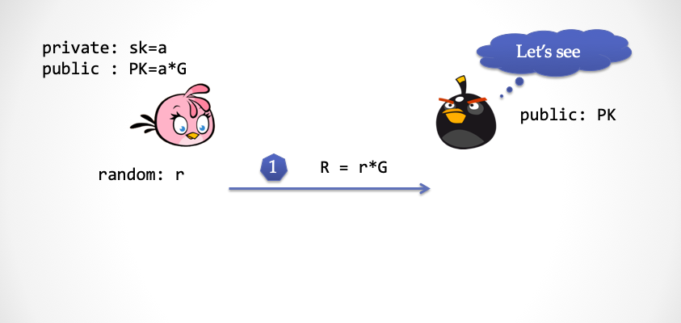
第一步：Alice 选择一个随机数 r，并且计算 R=r*G，并将 R 发给「抽取器」
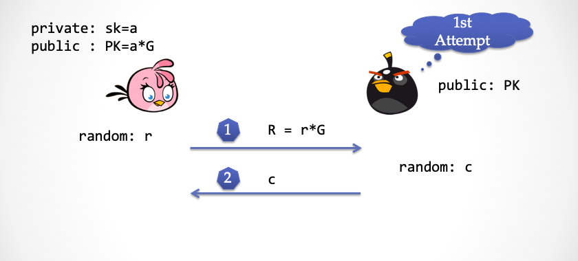
第二步：抽取器也选择一个随机的挑战数c，并且发给 Alice
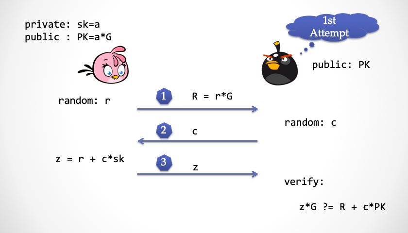
第三步：Alice 计算并且回应 z，然后抽取器检查 z是否正确
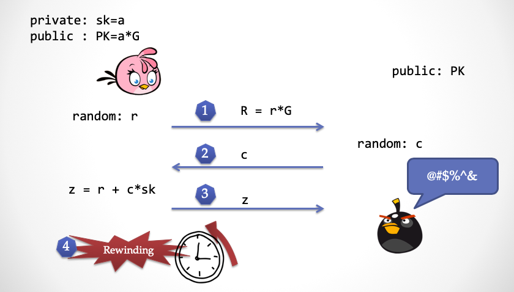
第四步：抽取器发现 z 没有问题之后，发动超能力，将时间倒回第二步之前
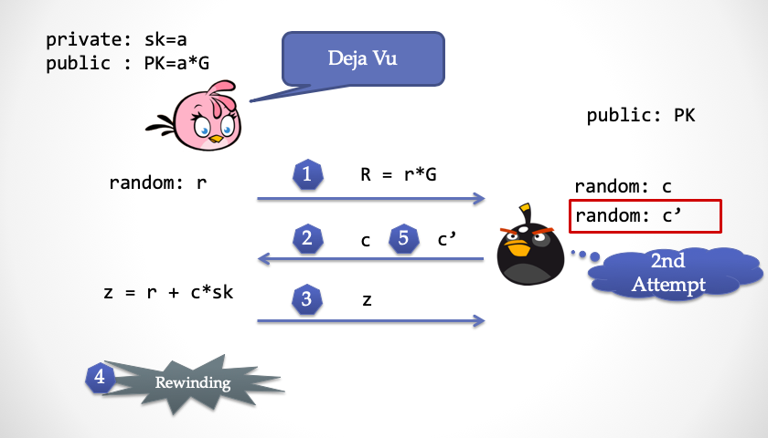
第五步：抽取器再次发送一个不同的随机挑战数 c'给 Alice，这时候 Alice 回到第二步，会有一种似曾相识的感觉，但是无法感知到时间倒回这个事实
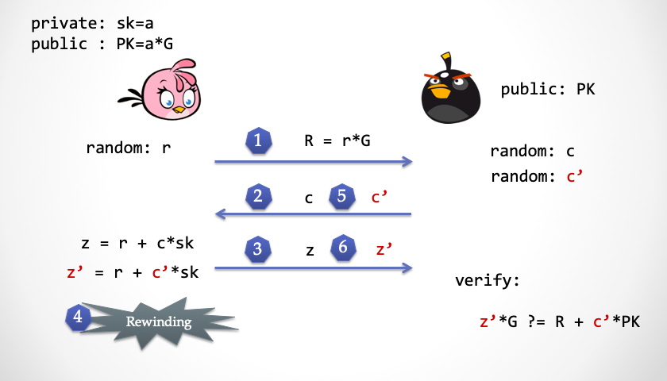
第六步：Alice 再次计算了 z'，然后发给抽取器检查
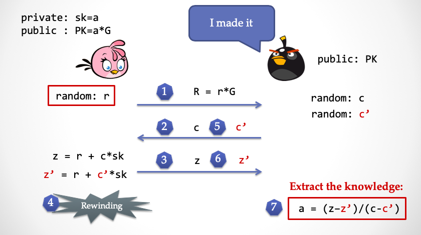
第七步：这时候抽取器有了z和z'，就可以直接推算出 Alice 所拥有的私钥 a，达成「知识抽取」
到这里，「可靠性」就基本证明完了。大家是不是对可靠性和零知性的「对称性」有点感觉了？
总结一下：「抽取器」在「理想世界」中，通过时间倒流的超能力，把 Alice 的「知识」完整地「抽取」出来，这就保证了一个没有知识的 Alice 是无法让抽取器达成目标，从而证明了「可靠性」。
注：并不是所有的可靠性都必须要求存在抽取器算法。采用抽取器来证明可靠性的证明系统被称为「Proof of Knowledge」。
解读 ECDSA 签名攻击
在区块链系统中到处可见的ECDSA 签名方案也是一个朴素的零知识证明系统。椭圆曲线数字签名方案 ECDSA 与 Schnorr 协议非常接近，基于 Schnorr 协议的签名方案发表在 1991年的『密码学杂志』[5]上。1991年，正值美国国家标准局（NIST）选择数字签名算法，优雅的 Schnorr 签名方案居然被申请了专利，因此 NIST 提出了另一套签名方案 DSA（Digital Signature Algorithm），随后这个方案支持了椭圆曲线，于是被称为 ECDSA。中本聪在构思比特币时，选择了 ECDSA 作为签名算法，但是曲线并没有选择 NIST 标准推荐的椭圆曲线 —— secp256-r1，而是 secp256-k1。因为江湖传言，NIST 可能在椭圆曲线参数选择上做了手脚，导致某些机构可以用不为人知的办法求解离散对数难题，从而有能力在「现实世界」中具备超能力。有不少人在怀疑，也许当年中本聪在设计比特币时，也有这种考虑，故意选择了 secp256-k1 这样一条貌似安全性稍弱的曲线。
我们拆解下 ECDSA 签名，用交互的方式定义一个类似 ECDSA 的认证方案，交互见下图。
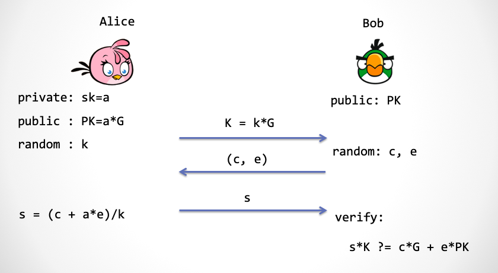
第一步：Alice 仍然是选择一个随机数 k，并将 k 映射到椭圆曲线上，得到点 K ，然后发送给 Bob
第二步：Bob 需要产生两个随机数，c 和 e，然后交给 Alice
第三步：Alice 计算 s，并且发送给 Bob，他来验证 s 的计算过程是否正确
注：对熟悉 ECDSA 签名方案的读者，这里略作解释，Bob 产生的 c 对应被签消息的 Hash 值 Hash(m)，而 e 则是由一个转换函数 F(K)来产生。其中 F(.) 是取椭圆曲线上的点的 x 坐标经过 (mod q) 得到[6]。
江湖上流传着一个说法：ECDSA 签名方案有个严重的安全隐患，如果在两次签名中使用了同一个随机数，那么签名者的私钥将会暴露出来。其实 Schnorr 签名方案也有同样的问题。
当年 Sony PlayStation 3 的工程师在调用 ECDSA 库函数时，本来应该输入随机数的参数位置上，却传入了一个常数。熟悉密码学的黑客们发现了这个严重的后门。2011年1月，神奇小子 Geohot 公开发布了 Sony PS3 的主私钥，这意味着任何用户都可以轻松拿到游戏机的 root 权限。Sony 随后大为光火…… （后续故事大家可以上网搜）
如果 Alice 在两次交互过程中使用了同一个 K，那么 Bob 可以通过发送两个不同的 c 和 c' 来得到 s 和 s'，然后通过下面的公式算出私钥 a：
k = (c - c')/(s - s')
a = (k * s - c)/e
那么我们应该怎么来看这个「安全后门」呢？大家想想看，这个安全后门和我们前面证明过的 Schnorr 协议的可靠性证明几乎一模一样！这个算法正是 ECDSA 认证协议的「可靠性」证明中的「抽取器」算法。只不过在可靠性证明中，为了让 Alice 使用同一个随机数 k 来认证两次，「抽取器」需要利用「时间倒流」的超能力。
但是在 Sony PS3 系统中，随机数被不明所以的工程师写成了一个固定不变的值，这样相当于直接赋予了黑客「超能力」，而这是在「现实世界」中。或者说，黑客在不需要「时间倒流」的情况下就能实现「抽取器」。
提醒下，不仅仅是随机数不能重复的问题。而是随机数必须是具有密码学安全强度的随机数。
设想下，如果随机数 r 是通过一个利用「线性同余」原理的伪随机数生成器产生，虽然 r的值一直在变化，但是仍然不能阻止「知识抽取」。假设线性同余算法为 r2= d*r1 + e (mod m)，还回到 Schnorr 协议的第三步：
1: z1 = r1 + c1*a
2: z2 = r2 + c2*a
如果攻击者让 Alice 连续做两次签名，那么将 r2 代入 r1 之后，就出现了两个线性方程求解两个未知数 (r1, a) 的情况，z1, z2, c1, c2, d, e 对于 攻击者是已知的，这个方程组只用初中数学知识就可以求解。
请注意，这并不是 Schnorr 协议（或 ECDSA 协议）的「设计缺陷」，恰恰相反，这是 Schnorr 协议设计比较精巧的地方，它从原理上保证了协议的可靠性。类似技巧在密码学协议中频繁出现，达到一目了然的「简洁」。但是也不得不说，如果不清楚协议的内在机制，尤其是区分不清楚「理想世界」与「现实世界」，使用者很容易引入各种花式的「安全漏洞」。
作为一个能写出可靠软件的靠谱码农，我们需要了解哪些？彻底理解安全协议的设计机制当然是最好的，但是绝大多数情况下是非常耗费精力的。一般来说，我们把各种密码学工具当做「黑盒」来用，可能是不够的，我们最好还能了解下：
- 「安全定义」是什么？
- 「安全假设」到底是什么？
- 「理想世界」中的「超能力」到底是什么？
脑洞：我们生活在模拟世界中吗
第一次读懂「模拟器」时，我第一时间想到的是电影『黑客帝国』。我们生活所在「现实世界」也许是某一个模拟器模拟出来的「理想世界」，我们所看到、听到的以及感知到的一切都是被「模拟」出来的。在「现实世界」里，我们活在一个母体中。然而我们并不能意识到这一点。
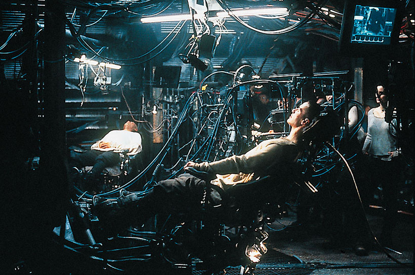
早在春秋战国时期，庄子也在思考类似的问题：
昔者庄周梦为胡蝶，栩栩然胡蝶也，自喻适志与，不知周也。俄然觉，则蘧蘧然周也。不知周之梦为胡蝶与，胡蝶之梦为周与？周与胡蝶，则必有分矣。此之谓物化。——《庄子·齐物论》
通俗地解释下：庄子有一天睡着了，梦见自己变成了一只蝴蝶，翩翩起舞，醒来之后发现自己还是庄子，在梦中，蝴蝶并不知道自己是庄子。于是庄子沉思到底是他梦中变成了蝴蝶，还是蝴蝶梦中变成了庄子呢？如果梦境足够真实，……
「缸中之脑」是美国哲学家 Gilbert Harman 提出的这样一个想法：一个人的大脑可以被放入一个容器里面，然后插上电线，通过模拟各种电信号输入，使得大脑以为自己活在真实世界中。
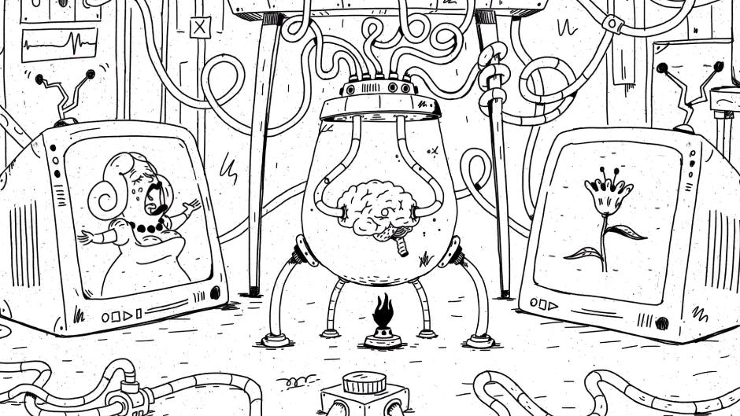
这个想法源自哲学家笛卡尔的《第一哲学沉思集》[7]，在书中他论证我们应该怀疑一切，需要逐一检验所有人类的知识，数学，几何，以及感知到的世界。然而他发现除了「我思故我在」之外，所有的知识都可能不靠谱，因为我们的大脑很可能被一个具有「超能力」的 Evil Demon 所欺骗。
2003 年牛津大学的哲学教授 Nick Bostrom 郑重其事地写了一篇论文『我们生活在计算机模拟世界中吗？』[8]。认为以下三个事实中，至少有一个成立：
- 人类文明彻底灭绝。
- 人类文明已经到达可以完全模拟现实世界的科技水平，但是处于某种原因，没有一个人愿意去创造出一个新的模拟世界，充当上帝的角色。
- 我们现在的人类文明就生活在一个模拟世界中。
硅谷企业家 Elon Musk 在一次公开采访中，谈到「我们生活在基础现实世界」的概率只有「十亿分之一」。也就是说，他认为我们生活在一个电脑游戏（模拟世界）中，在模拟世界之外，有一个程序员，他开发并操纵了这个世界，我们每个人都是一个游戏角色（ NPC）。
在玩腻越狱 iPhone 和自动驾驶之后，神奇小子 Geohot 在今年三月份的「西南偏南」大会上做了一个题为「Jailbreaking the Simulation」的演讲[9]。他认为，我们被生活在一个模拟世界中，所谓的上帝就是外部世界里活蹦乱跳的码农们，他们编程创造了我们的「现实世界」，当然，他们可能启动了不止一个世界副本。然而，他们可能也生活在一个外层「模拟世界」中。
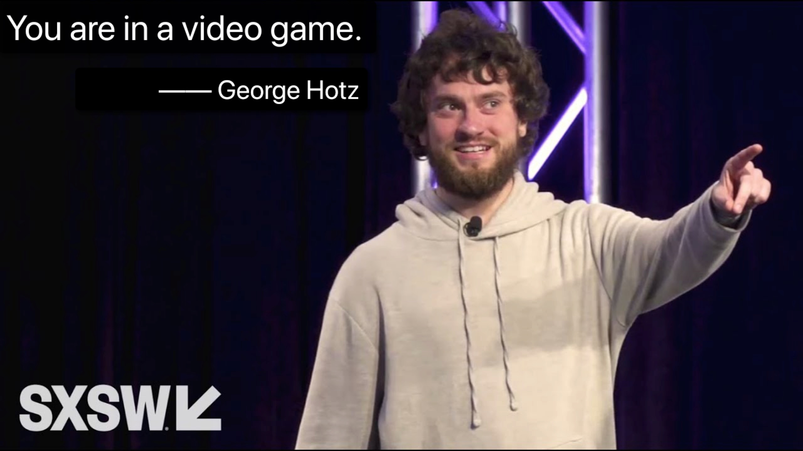
如果我们确实生活在模拟世界中，或许我们可以在地球的某个地方找到一个后门——「Simulation Trapdoor」，从而获得「模拟器」的超能力，抽取出不可思议的「秘密知识」。
如果我们的世界的确是被程序模拟出来的，这个程序也许会有 Bug，如果有 Bug 存在，说不定我们可以利用这个 Bug 进行越狱，跳出「理想世界」，到达外面一层的世界中，与可爱的码农上帝聊一聊。
这是在开玩笑吗？下面摘自自知乎的一个段子[10]：
- 问题：「如果世界是虚拟的，有哪些实例可以证明？」。
- 回答：
- 为什么宏观上丰富多彩，但是微观的基本粒子却都是一模一样的？这正和图片富多彩，但是像素是一模一样的一回事
- 为什么光速有上限？因为机器的运行速度有限
- 为什么会有普朗克常量？因为机器的数据精度有限
- 为什么微观粒子都是几率云？这是为了避免系统陷入循环而增加的随机扰动
- 为什么有泡利不相容原理？看来系统采用的数据组织是多维数组
- 为什么量子计算机运行速度那么快，一瞬间可以尝试所有可能？因为这个本质上是调用了宿主机的接口
- 为什么会有量子纠缠？这实际上是引用同一个对象的两个指针
- 为什么会有观察者效应？这显然是lazy updating
- 为什么时间有开端？系统有启动时间
未完待续
设计一个密码学协议就好像在走钢丝，如果你想同时做到「零知识」和「可靠性」就意味着既要让协议内容充分随机，又要保证「知识」能够参与协议的交互。如果协议没有正确设计，亦或没有正确工程实现，都将导致系统安全性坍塌。比如可能破坏了零知性，导致「知识」在不经意间泄露；或者也许破坏了可靠性，导致任何人都能伪造证明。而且这种安全性，远比传统的代码底层机制漏洞来得更加严重，并且更难被发现。严格数学论证，这似乎是必不可少的。
我们的世界真的是某个「三体文明」模拟出来的吗？不能排除这个可能性，或许，我们需要认真地重新审视自己的各种执念。不过那又怎么样呢？至少自己的「思想」是真实的。
If you would be a real seeker after truth, it is necessary that at least once in your life you doubt, as far as possible, all things. 如果你是一个真正的真理探求者，在你人生中至少要有一次，尽可能地质疑所有的事情。 —— 笛卡尔
致谢：特别感谢 Shengchao Ding, Jie Zhang，Yu Chen 以及安比实验室小伙伴们(p0n1, even, aphasiayc, Vawheter, yghu, mr)的建议和指正。
参考文献
- [1] zkPoD: 区块链，零知识证明与形式化验证，实现无中介、零信任的公平交易. 安比实验室. 2019.
- [2] Hoffstein, Jeffrey, Jill Pipher, Joseph H. Silverman, and Joseph H. Silverman. An introduction to mathematical cryptography. Vol. 1. New York: springer, 2008.
- [3] Schwartz–Zippel Lemma. Wikipedia. https://en.wikipedia.org/wiki/Schwartz%E2%80%93Zippel_lemma
- [4] Damgård, Ivan. “On Σ-protocols.” Lecture Notes, University of Aarhus, Department for Computer Science (2002).
- [5] Schnorr, Claus-Peter. “Efficient signature generation by smart cards.” Journal of cryptology 4.3 (1991): 161-174.
- [6] Brown, Daniel RL. “Generic groups, collision resistance, and ECDSA.” Designs, Codes and Cryptography 35.1 (2005): 119-152.
- [7] 笛卡儿, 徐陶. 第一哲学沉思集. 九州出版社; 2008.
- [8] Bostrom, Nick. “Are we living in a computer simulation?.” The Philosophical Quarterly 53.211 (2003): 243-255.
- [9] Nick Statt. “Comma.ai founder George Hotz wants to free humanity from the AI simulation”. Mar 9, 2019. https://www.theverge.com/2019/3/9/18258030/george-hotz-ai-simulation-jailbreaking-reality-sxsw-2019
- [10] doing@知乎. “如果世界是虚拟的，有哪些实例可以证明？”. 2017. https://www.zhihu.com/question/34642204/answer/156671701